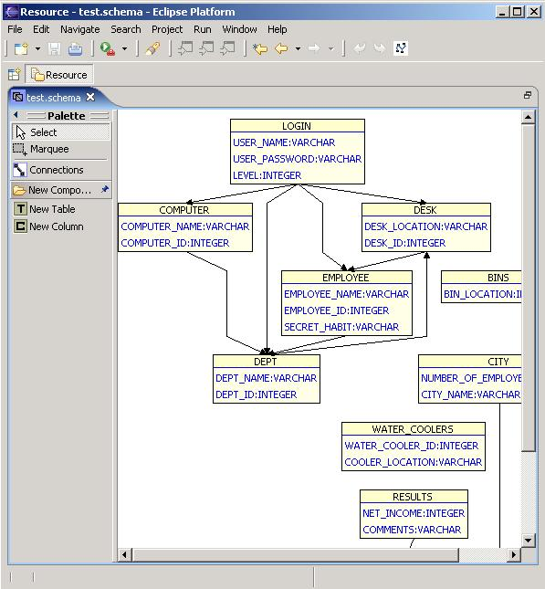

| Eclipse Corner Article |
Summary
GEF is a very powerful framework for visually creating and editing models. With a small initial investment, even the relative Eclipse novice can be quickly up and running, building applications with graphical editing capabilities. To illustrate, this article uses a relational database schema diagram editor with a deliberately simplified underlying model, but with enough bells and whistles to show some of the interesting features of GEF at work.Phil Zoio, Realsolve Solutions Ltd.
September 27, 2004
Having graphical editing capabilities can be a real asset, if not an essential feature, for many tools and applications. Examples are not hard to think of: UML tools, GUI builders, in fact, any application which comprises a dynamic model which can be visualized. With GEF, Eclipse developers have at their disposal a framework which can really simplify development of graphical editors. This article uses a simple but non-trivial example to show how a GEF application works - and what you need to do to get it to perform its little miracles.
The screenshot below shows what our example editor looks like. The edit area uses a "flyout" palette which contains some very basic entries and can be minimized to increase the editable screen area. On the right side is a scrollable graphical viewer containing the tables and their relationships.

 Download and unzip the
example plug-in schemaeditor.zip into your eclipse/
directory, then create a new diagram by launching the wizard from the File menu:
File -> New -> Example ... -> GEF (Graphical Editing Framework) -> Schema Diagram
Editor.
Download and unzip the
example plug-in schemaeditor.zip into your eclipse/
directory, then create a new diagram by launching the wizard from the File menu:
File -> New -> Example ... -> GEF (Graphical Editing Framework) -> Schema Diagram
Editor.
At the heart of GEF is the Model-View-Controller pattern, discussed in Randy Hudson's introductory tutorial How to Get Started with the GEF, and also providing a focus for much of this article.
The starting point for any GEF application is the model. This is what needs to be displayed, edited and persisted. Our somewhat oversimplified model contains the following classes:
Table: represents a relational database table. The only attribute that the table holds itself is the nameColumn: represents a table column. Here we are interested in the column name and the type of data, which itself can either be VARCHAR or INTEGERRelationship: represents a primary key/foreign key relationship between two tables.
The foreign key table we denote the source of the relationship, while the primary key table is the target.
Note that our model applies a relationship directly between two tables,
rather than between foreign and primary key fields in the respective tables,
as we would in the real worldSchema: simply represents all the tables we plan to group together (and ultimately show on the same diagram)Of course, we need to decide what we want our editor to be able to do with the model. Here, we want to be able to:
The display component in both GEF and draw2d is built around the draw2d IFigure interface.
Figures in draw2d are lightweight objects which can be nested to create a complex graphical representation.
The view is created by rendering and laying out the set of figures which reflect the model.
In a typical GEF application, you would normally create a set of customized IFigure implementations, each subclassing Figure.
 If you're unfamiliar with draw2d and
If you're unfamiliar with draw2d and Figures, take a look at Daniel Lee's article on Display a UML Diagram using Draw2D,
In our application we have the following figures:
EditableLabel: a subclass of the draw2d Label class which itself
subclasses Figure. We need this for the column and table namesColumnsFigure: a container for all the column labelsTableFigure: contains an EditableLabel for the table name, as well as a ColumnsFigure for the column namesSchemaFigure: a container for all the TableFigures in the schema
We haven't provided any custom figures to represent connections - we simply use the draw2d PolylineConnection class,
which is a just a line with zero or more kinks or bend points.
Because the table names as well as the number of columns and their names are likely to change during the lifetime of a TableFigure instance,
we want our ColumnsFigure and TableFigure to be resizable.
A key role in allowing this to happen is played by layout managers, another important part of the draw2d framework.
GEF provides a layout management framework which is distinct from the Swing and Eclipse SWT layout managers:
its job is specifically to handle layout of the child figures of draw2d IFigure instances.
Your job as an application developer is to decide which layout manager to use
for each figure containing child figures.
Broadly speaking, there are three types of layout managers:
FlowLayout and ToolbarLayout,
which lay out child figures according to their order by arranging them vertically or horizontally
XYLayout and the DelegatingLayout.
Here the application itself participates directly in the placement of figures by setting a constraint Object
for each child figure. In the case of the XYLayout, this object is a Rectangle
with specified location and sizeDirectedGraphLayout
and CompoundDirectedGraphLayout
The GEF developer needs to understand which layout managers can be best applied in which situation.
Structured layout managers are suitable when there is a well defined parent-child relationship between the
containing figure and its children and
the children are not related to each other in arbitrary ways.
In our example application, TableFigure uses a ToolbarLayout to place its children
(simply stacking them vertically). The ColumnsFigure does the same with its child Label objects,
but uses the FlowLayout for this purpose.
This kind of arrangement of course does not work with SchemaFigure -
any of its child TableFigures may be related to any other via a primary key/foreign key relationship,
so we cannot simply stack the table figures next to each other or side by side.
For SchemaFigure we need to choose between either a constraint-based layout manager or a graph layout manager.
In our example application we use both. Users can switch between manual layout, which involves dragging table figures
to their desired locations, and automatic placement of figures using geometry computation algorithms.
How this is done is beyond the scope of this article,
although interested readers can examine the
DelegatingLayoutManager class in the example application source code.
 Open a schema diagram editor and make some changes, switching between manual
and automatic layout using the
Open a schema diagram editor and make some changes, switching between manual
and automatic layout using the
 icon.
icon.
We only really move into GEF territory proper when we start talking about the controller in the MVC trilogy.
GEF provides an abstraction that prevents the model from having to know about the figures, and vice versa.
At the centre of this architecture is the EditPart interface.
The first thing to know is that typically every separately editable part of the model will need to be
associated with an EditPart instance. This means that there will usually be a close to one-for-one mapping between classes
in the model hierarchy and classes in the EditPart hierarchy.
In most cases, an EditPart is also a GraphicalEditPart, which means that
as well as managing a model component, it also has an associated view component. Because the
model and view are completely decoupled, all coordination between the model and the view must be managed by the EditPart.
This coordination can be divided into two separate areas of activity:
EditPolicies, discussed in the section EditPolicies and Roles
EditPart implementations
SchemaDiagramPart: represents a Schema instance and associated SchemaFigureTablePart: represents a Table and manages the TableFigure and child view componentsColumnPart: enables editing functionality for the column labelRelationshipPart: represents a primary key/foreign key relationship.
In the same way that Relationship in the model is associated with two Table instances,
a RelationshipPart is associated with two TableParts
When an instance of any of these classes is created, it is automatically associated with a part of the model.
This is a build-in feature of the framework. As part of our editor, we have to provide an EditPartFactory implementation.
Ours looks like this:
public class SchemaEditPartFactory implements EditPartFactory
{
public EditPart createEditPart(EditPart context, Object model)
{
EditPart part = null;
if (model instanceof Schema)
part = new SchemaDiagramPart();
else if (model instanceof Table)
part = new TablePart();
else if (model instanceof Relationship)
part = new RelationshipPart();
else if (model instanceof Column)
part = new ColumnPart();
part.setModel(model);
return part;
}
}
SchemaDiagramPart, TablePart and ColumnPart
all extend AbstractGraphicalEditPart and implement GraphicalEditPart.
In addition, TablePart can be a node in a primary/foreign key relationship,
so it has to implement NodeEditPart.
Finally, RelationshipPart represents the connection part of the relationship,
so it extends AbstractConnectionEditPart.
SchemaDiagramPart's job is primarily managing the layout of the tables.
ColumnPart's role is relatively limited - it just needs to handle editing of the label displaying name and type information.
Of the four of these, TablePart has the most to do.
In GEF, most of the work that is done to manage relationships is done
by NodeEditPart, and not ConnectionEditPart.
Because we sometimes need to rename tables, TablePart also has to manage
editing of the label that displays its name.
We will spend more of our time focusing on TablePart.
EditPart subclasses must
fulfill:
Provide a figure instance to be associated with the EditPart.
In the case of TablePart, we simply return a new TableFigure instance with a name label:
protected IFigure createFigure()
{
Table table = getTable();
EditableLabel label = new EditableLabel(table.getName());
TableFigure tableFigure = new TableFigure(label);
return tableFigure;
}
EditParts which represent parent objects in parent-child relationships need to override getModelChildren().
In the case of TablePart, our
implementation of this method simply returns the Column objects it contains:
protected List getModelChildren()
{
return getTable().getColumns();
}
Note that the AbstractEditPart implements a parallel method getChildren(),
which returns the EditPart collection representing the model children.
In the case of TablePart, getChildren() returns a list of ColumnPart objects.
We know this because our implementation of EditPartFactory associates
Column model instances with instances of ColumnPart.
The EditPart List returned by getChildren()
always needs to be kept in sync with the getModelChildren().
In the Section Synchronizing EditPart Relationships with Model Changes we describe how this happens
If the parent EditPart's figure is not the direct parent of the child EditPart's figure, you will
need to override AbstractGraphicalEditPart.getContentPane().
The content pane is the containing figure into which GEF adds figures created by child EditParts,
which is by default the figure returned by the EditPart's createFigure() method.
In our example application
the column labels are not contained within a TableFigure but within its ColumnsFigure child.
Our implementation of getContentPane() in TablePart reflects this:
public IFigure getContentPane()
{
TableFigure figure = (TableFigure) getFigure();
return figure.getColumnsFigure();
}
 Do not add and remove child figures
by overriding
Do not add and remove child figures
by overriding AbstractGraphicalEditPart.addChildVisual() and AbstractGraphicalEditPart.removeChildVisual().
Override getContentPane() instead.
EditParts which represent nodes (model objects which may participate in connections)
must also implement a number of additional methods defined in the interface NodeEditPart
protected List getModelSourceConnections(): this returns all the connection model objects for which the
node model object is the source.
In our example application, we have identified foreign keys as the source of a primary key/foreign key relationship.
TablePart's implementation contains just a single line of code:
return getTable().getForeignKeyRelationships();
This method simply returns the Relationship objects for
which the current TablePart's Table is the foreign key.
Once again, there is a parallel method getSourceConnections(),
which returns the List of RelationshipParts associated with these relationships.
We also consider in the Section Synchronizing EditPart Relationships with Model Changes
how the ConnectionEditPart list returned by
getSourceConnections() stays in sync with the
Relationship list returned by getModelSourceConnections()
protected List getModelTargetConnections():
this works identically to getModelSourceConnections(),
except that it returns the Relationship objects for which the current
TablePart's Table is the primary key
the node GraphicalEditPart must also provide implementations of the
NodeEditPart getSourceConnectionAnchor() and getTargetConnectionAnchor() methods.
In each case, these methods return objects which represent the points to which connections between nodes can be attached
createEditPolicies(),
during which EditPolicy implementations are associated with specific editing roles.
The EditPolicy and its associated roles, Request and
Command objects are a fundamental part of GEF which we discuss in the next sections
We begin with requests because these are really the starting point of
the editing process that GEF application developer works with.
In fact, the real magic in GEF is being able to interpret user
interactions and transform
these into requests,
which the application can work with in an object-oriented fashion.
For example, when we drag from the "New Column" palette button onto an existing
table on the diagram, we are of course trying to add a new column to the table.
As users interact with the application, GEF's behind-the-scenes work produces Request objects.
In the create column example, GEF produces
a CreateRequest, which contains the following important information:
EditPart object which is hosting this request.
In our case this will be an instance of TablePartRequest
types
- these are well covered in the GEF API and platform documentation.
These request objects neatly encapsulate the information the
application needs to transform user interaction into changes to the
model. We can take a look at how this is done once we have looked at Commands and EditPolicies,
which we cover in the next section.
An EditPolicy is really just an extension of an EditPart,
in the sense that certain editing related tasks are passed on from the EditPart to its EditPolicy delegates.
EditPart implementations would rapidly become bloated if they had to take on everything that EditPolicies do.
To understand what an EditPolicy is and what it does,
lets start by looking at the createEditPolicies() method in TablePart:
protected void createEditPolicies()
{
installEditPolicy(EditPolicy.GRAPHICAL_NODE_ROLE, new TableNodeEditPolicy());
installEditPolicy(EditPolicy.LAYOUT_ROLE, new TableLayoutEditPolicy());
installEditPolicy(EditPolicy.CONTAINER_ROLE, new TableContainerEditPolicy());
installEditPolicy(EditPolicy.COMPONENT_ROLE, new TableEditPolicy());
installEditPolicy(EditPolicy.DIRECT_EDIT_ROLE, new TableDirectEditPolicy());
}
The purpose of this method is simply to decorate the TablePart with editing functionality.
Each call to installEditPolicy() in the above method
registers an EditPolicy with the EditPart.
The key constant used in each of these calls is the name of the role used.
For example, EditPolicy.CONTAINER_ROLE is
simply the string "ContainerEditPolicy".
The container role is relevant for TablePart because we know that tables contain
columns, and one of our application's requirements is to create new columns
and add these to existing tables.
The use of a particular role name in the installEditPolicy() call is really just a convention - the framework does not
attach any behavior to a particular choice of role name.
What distinguishes an EditPolicy implementation (and its corresponding role) is the type of requests it understands.
Most of the abstract EditPolicy classes
provide an implementation of the getCommand(Request request) method.
In ContainerEditPolicy we find the following:
public Command getCommand(Request request) {
if (REQ_CREATE.equals(request.getType()))
return getCreateCommand((CreateRequest)request);
if (REQ_ADD.equals(request.getType()))
return getAddCommand((GroupRequest)request);
if (REQ_CLONE.equals(request.getType()))
return getCloneCommand((ChangeBoundsRequest)request);
if (REQ_ORPHAN_CHILDREN.equals(request.getType()))
return getOrphanChildrenCommand((GroupRequest)request);
return null;
}
Here getCommand() simply uses the request type to determine which getXXXCommand() method to call.
In ContainerEditPolicy, getCreateCommand() is abstract -
we must provide an implementation in order to use the base ContainerEditPolicy functionality.
Here is our implementation of TableContainerEditPolicy:
public class TableContainerEditPolicy extends ContainerEditPolicy
{
protected Command getCreateCommand(CreateRequest request)
{
 Object newObject = request.getNewObject();
if (!(newObject instanceof Column))
{
return null;
}
Column column = (Column) newObject;
Object newObject = request.getNewObject();
if (!(newObject instanceof Column))
{
return null;
}
Column column = (Column) newObject;
 TablePart tablePart = (TablePart) getHost();
Table table = tablePart.getTable();
TablePart tablePart = (TablePart) getHost();
Table table = tablePart.getTable();
 ColumnCreateCommand command = new ColumnCreateCommand();
command.setTable(table);
command.setColumn(column);
return command;
}
}
ColumnCreateCommand command = new ColumnCreateCommand();
command.setTable(table);
command.setColumn(column);
return command;
}
}
In most cases, our EditPolicy implementations simply amount to using a
Request object to generate a Command.
Our getCreateCommand() method
CreateRequest
and makes sure that it is an instance of Column,Table object associated with
the host EditPart, andCommand class,
configures it with the Table and Column information, and returns itTablePart createEditPolicies() implementation uses one of
our customized EditPolicy implementations for each invocation of
installEditPolicy().
Each of our EditPolicy implementations subclasses a GEF-provided abstract EditPolicy for a different role.
For example, TableEditPolicy extends ComponentEditPolicy to
fulfill the EditPolicy.COMPONENT_ROLE.
It does so by implementing the
createDeleteCommand(GroupRequest request) to handle requests of type REQ_DELETE.
The GEF platform documentation provides a lot more detail on the types of roles and requests and how and when they can be used, so we won't cover them in any more detail here.
Command is GEF's abstract base class whose function is simply to encapsulate our application's response to a request.
Key methods included in the Command class are the following:
execute():
Command provides a no-op implementation. As the name suggests,
this contains the code to apply any change to the model that the Command object encapsulatesundo(): used to reverse the effect of execute().
Here Command also provides a no-op implementationredo(): used redo a command execution.
The Command implementation simply calls execute(), which should usually be adequatecanExecute(): whether execute() can be executed.
The subclass can implement this to specify the conditions under which the command can be executedcanUndo(): whether undo() can be executed.
The Command implementation simply returns true, which subclasses can overridecanRedo(): whether redo() can be executed. The Command implementation here also simply returns true
Any non-trivial Command subclass would need to implement execute().
Implementation of undo() would be recommended in most cases. The other methods
are optional and would only be overridden as required.
Lets take a look at our rather straightforward ColumnCreateCommand implementation:
public class ColumnCreateCommand extends Command
{
private Column column;
private Table table;
public void setColumn(Column column)
{
this.column = column;
Much of the class is self-explanatory.
We have setter methods to populate the  this.column.setName("COLUMN " + (table.getColumns().size() + 1));
this.column.setType(Column.VARCHAR);
}
public void setTable(Table table)
{
this.table = table;
}
public void execute()
{
this.column.setName("COLUMN " + (table.getColumns().size() + 1));
this.column.setType(Column.VARCHAR);
}
public void setTable(Table table)
{
this.table = table;
}
public void execute()
{
 table.addColumn(column);
}
public void undo()
{
table.addColumn(column);
}
public void undo()
{
 table.removeColumn(column);
}
}
table.removeColumn(column);
}
}Command object
with the newly-created Column as well as the
target container Table.
We arbitrarily provide a name and type for the Column  ,
which the user can later change.
We can also see that
,
which the user can later change.
We can also see that execute()  simply adds the
simply adds the Column object to the Table,
and undo()  simply reverses that change.
simply reverses that change.
The use of Commands has two key advantages over using EditPolicies directly to effect model changes
Command framework has built-in support for undo and redo functionality
 The
The Command implementation is closely tied to the model,
and should be cleanly separated from GEF-specific components.
It should not contain any references to EditParts or EditPolicies.
Observing this rule preserves the clean separation
between commands and the UI logic, helping to keep code more maintainable and bug-free.
Once we've changed the model, our GEF editor needs to propagate these changes to the UI. Our model, view and controller need to work together to achieve this.
So far, we have discussed the GraphicalEditPart's responsibility to provide a figure
to represent the part of the model it is managing.
To participate in a fully functional graphical editor, it needs to do more:
EditPart can receiveEditParts, keeping these in sync with changes to the modelThe requirements imposed on our model implementation are that
PropertyAwareObject, which looks like this:
public abstract class PropertyAwareObject implements Serializable
{
 public static final String CHILD = "CHILD";
... other String constants representing the other types of model changes
public static final String CHILD = "CHILD";
... other String constants representing the other types of model changes
 protected transient PropertyChangeSupport listeners = new PropertyChangeSupport(this);
protected PropertyAwareObject()
{
}
public void addPropertyChangeListener(PropertyChangeListener l)
{
protected transient PropertyChangeSupport listeners = new PropertyChangeSupport(this);
protected PropertyAwareObject()
{
}
public void addPropertyChangeListener(PropertyChangeListener l)
{
 listeners.addPropertyChangeListener(l);
}
public void removePropertyChangeListener(PropertyChangeListener l)
{
listeners.addPropertyChangeListener(l);
}
public void removePropertyChangeListener(PropertyChangeListener l)
{
 listeners.removePropertyChangeListener(l);
}
protected void firePropertyChange(String prop, Object old, Object newValue)
{
listeners.removePropertyChangeListener(l);
}
protected void firePropertyChange(String prop, Object old, Object newValue)
{
 listeners.firePropertyChange(prop, old, newValue);
}
...
}
listeners.firePropertyChange(prop, old, newValue);
}
...
}
Our abstract model base class
contains a few String constants java.beans.PropertyChangeSupport firePropertyChange() Table:
public void addColumn(Column column)
{
columns.add(column);
firePropertyChange(CHILD, null, column);
}
With this mechanism available, we now need to take advantage in our EditPart listeners.
Once again, we address the issue
by providing a common base class for our GraphicalEditParts to extend, shown below:
public abstract class PropertyAwarePart
extends AbstractGraphicalEditPart
implements PropertyChangeListener
{
public void activate()
{
super.activate();
PropertyAwareObject propertyAwareObject = (PropertyAwareObject) getModel();
propertyAwareObject.addPropertyChangeListener(this);
}
public void deactivate()
{
super.deactivate();
PropertyAwareObject propertyAwareObject = (PropertyAwareObject) getModel();
propertyAwareObject.removePropertyChangeListener(this);
}
public void propertyChange(PropertyChangeEvent evt)
{
//handle property change event
...
}
}
The GEF API documentation recommends the use of activate() and deactivate()
to register or deregister model listeners.
This is what we do here. After casting our model object to PropertyAwareObject,
we add our EditPart as a listener in EditPart is activated, any event notifications fired from our model
will result in an invocation of propertyChange() propertyChange() implementation in PropertyAwarePart in turn delegates
its response to other methods, which can be overridden by EditPart subclasses
to customize reactions to specific changes in the model.
As we mentioned previously, the first thing the EditPart implementation needs to do in response to a model change is to
ensure that its relationship hierarchy is in sync with that of the model.
GEF provides a quick and easy solution in the form of three methods in the EditPart
hierarchy. Before discussing
a more performant approach that many applications will demand, we'll take a look at these methods.
refreshChildren(): when an EditPart represents a model object with children,
this method may need to be called.
Our example of adding a column to a table is a good one. The same applies for removing a column from a table.
If we moved a column from one table to another,
refreshChildren() would need to be called for both corresponding TableParts.
The base implementation of this method not only synchronizes your model and EditPart hierarchies -
it also adds or removes visual components as required
by calling the AbstractGraphicalEditPart addChildVisual() and removeChildVisual() methods
refreshSourceConnections(): this applies to any model change where the source of a connection
is added, removed or reassigned.
For example, if we added or deleted a primary/foreign key relationship, this method would need to be called
refreshTargetConnections(): this only applies to a model change where the target
of a connection is added, removed or reassigned. It would be needed for any change affecting
the primary key of a relationship between tables
Returning to our example of adding a column to a table,
our implementation of PropertyAwarePart.propertyChange() can be
reduced to the following:
public void propertyChange(PropertyChangeEvent evt)
{
String property = evt.getPropertyName();
if (PropertyAwareObject.CHILD.equals(property))
{
refreshChildren();
refreshVisuals();
}
... handle other types of property changes here
}
To resynchronize the EditPart hierarchy, we simply call
refreshChildren() refreshVisuals()
Using the methods refreshChildren(), refreshSourceConnections() and refreshSourceConnections()
can help you get your application working quickly, but if we want our application to run efficiently,
we need to be more selective
in the methods we use. For example, to add or remove a child, we can use the EditPart methods
addChild(EditPart, int) and removeChild(EditPart).
Our revised handleChildChange(PropertyChangeEvent)below is a better performing replacement for refreshChildren()
which uses these methods:
protected void handleChildChange(PropertyChangeEvent evt)
{
Object newValue = evt.getNewValue();
Object oldValue = evt.getOldValue();
if (newValue != null)
{
//add new child
 EditPart editPart = createChild(newValue);
EditPart editPart = createChild(newValue);
 int modelIndex = getModelChildren().indexOf(newValue);
int modelIndex = getModelChildren().indexOf(newValue);
 addChild(editPart, modelIndex);
}
else
{
//remove an existing child
List children = getChildren();
EditPart partToRemove = null;
for (Iterator iter = children.iterator(); iter.hasNext();)
{
EditPart part = (EditPart) iter.next();
if (part.getModel() == oldValue)
{
addChild(editPart, modelIndex);
}
else
{
//remove an existing child
List children = getChildren();
EditPart partToRemove = null;
for (Iterator iter = children.iterator(); iter.hasNext();)
{
EditPart part = (EditPart) iter.next();
if (part.getModel() == oldValue)
{
 partToRemove = part;
break;
}
}
if (partToRemove != null)
partToRemove = part;
break;
}
}
if (partToRemove != null)
 removeChild(partToRemove);
}
}
removeChild(partToRemove);
}
}
When adding our child, we need to call createChild()
 to get a new
to get a new EditPart for the model child.
We then find the index of the model child in the containing List ,
and add our new child
,
and add our new child EditPart using this index  .
When removing a child, we iterate through the existing children
.
When removing a child, we iterate through the existing children
EditParts until we find the one representing the removed model child  .
We then remove this
.
We then remove this EditPart  .
.
Clearly, there is more work here than in simply calling refreshChildren(): but for large models where performance is critical, this effort will be worth it.
Interested readers can examine handleInputChange(PropertyChangeEvent) and handleOuputChange(PropertyChangeEvent) in
PropertyAwarePart
for similar alternatives to refreshSourceConnections() and refreshTargetConnections() when updating relationships.
Consider our example of adding a column to a table. In draw2d terms,
this is represented by adding an EditableLabel into
a ColumnsFigure instance, which is itself contained within a TableFigure.
Both the ColumnsFigure and the TableFigure both need to enlarge
- the result otherwise is ugly (take my word for it!).
A few things need to happen:
TableFigure and ColumnsFigure,
which includes minimum size and preferred size for the child figures, needs to be thrown awaySchemaFigure's layout manager needs to
update any cached constraint information it is holding for the TableFigureTableFigure and the ColumnsFigure
need to change to reflect addition of the column
In fact, all we need to achieve this is in our implementation of refreshVisuals() in TablePart:
protected void refreshVisuals()
{
TableFigure tableFigure = (TableFigure) getFigure();
We get the
location of our figure  Point location = tableFigure.getLocation();
SchemaDiagramPart parent = (SchemaDiagramPart) getParent();
Point location = tableFigure.getLocation();
SchemaDiagramPart parent = (SchemaDiagramPart) getParent();
 Rectangle constraint = new Rectangle(location.x, location.y, -1, -1);
Rectangle constraint = new Rectangle(location.x, location.y, -1, -1);
 parent.setLayoutConstraint(this, tableFigure, constraint);
}
parent.setLayoutConstraint(this, tableFigure, constraint);
} ,
use this to provide a new
,
use this to provide a new Rectangle constraint object  .
By setting the width and height to -1, we ensure that the preferred width and height are calculated automatically.
We then pass on the constraint to the parent
.
By setting the width and height to -1, we ensure that the preferred width and height are calculated automatically.
We then pass on the constraint to the parent EditPart's layout manager  .
.
That's all there is to it.
But how do we know that the preferred size calculation for the
TableFigure or ColumnFigure
won't be using some stale cached value?
If you're interested in the answers to questions like this, read the
sidebar below.
| Sidebar: Invalidating and Updating Figures |
|
How does GEF know when to rearrange and resize figures, and which parts of the screen to repaint?
The key is in the methods in the
|
We've covered quite a lot of ground in this article. Most significantly, we've talked about how you can use the basic building blocks of a GEF application to easily build an application which adheres to a clean MVC design. With the exception of the direct editing functionality, most of the other types of editing operations work in a very similar way to the simple column adding example presented. Of course, all of the building blocks need to be put together in the context of an Eclipse editor. Space limitations preclude any discussion of these topics, but interested readers can peruse the source code, as well as that of the official GEF examples, to see how this can be done.
For more information on GEF, look at the Eclipse platform documentation, available via Eclipse online help if you download and install the GEF SDK. How to Get Started with the GEF gives a good introduction to GEF basics. Display a UML Diagram using Draw2D is a good starting point for those unfamiliar with Eclipse draw2d. Eclipse Development using the Graphical Editing Framework and the Eclipse Modeling Framework is an IBM Redbook providing more detailed coverage of GEF and EMF. You will also need to install EMF to get the Redbook examples to work.
Thanks to Randy Hudson and Jim des Rivières for their thorough and careful reviews, which have been very helpful in improving both the technical accuracy and readability of this article.
To run the example or view the source code for this article, download and unzip schemaeditor.zip into your eclipse/ subdirectory. Note that you will need Eclipse 3.0 or later to run the examples.